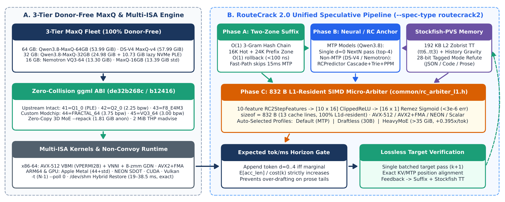

Running Qwen3.8-176B in a 28.5 GiB Cgroup on CPU (0 GPU) via Lazy-Paged PLE
How co-designing donor-free quantization, lazy NVMe Per-Layer Embeddings, zero-copy 3D MoE memory mapping, and an 832-byte L1 SIMD speculative arbiter breaks the capacity and DDR5 bandwidth walls for 30B–284B Sparse MoE models.
1. The Four Engineering Walls
Sparse Mixture-of-Experts (MoE) architectures paired with hybrid linear-attention or state-space layers
(Qwen3.8-Flash-Next 176.5B/5B active, DeepSeek-V4-Flash-0731 284.3B/13.2B active,
NVIDIA-Nemotron-3.5-30B-A3B 30.2B/3B active) decouple total knowledge capacity from per-token FLOPs.
Yet running them cleanly inside commodity 16–64 GB RAM budgets with zero GPU hits four hard walls:
- The Donor-Free Capacity Wall: Across 18 published
Qwen3.8-Flash-NextGGUFs (54.40–329.72 GiB), 0 / 18 fit inside a 28.5 GiB ceiling because keeping the 320M-row Per-Layer Embedding (PLE) table inIQ4_NLconsumes 26.82 GiB alone, leaving < 1.7 GiB for the 48-layer MoE trunk. - 3D MoE Repack Memory Blowup: Default heap repacking on 3D routed MoE tensors destroys zero-copy
mmapsharing, inflatingRssAnon5.4× (from 1.81 GiB to 9.81 GiB) and pushing 64 GB machines into swap. - ggml ABI Collisions: Overwriting upstream
ggmltype enum IDs breaks compatibility every time upstream adds standard formats likeQ1_0(41),Q2_0(42), orF8_E4M3(43). - CPU-MoE Speculative Cost Asymmetry: On GPUs, verifying k draft tokens costs almost the same as verifying 1 token. On DDR5-bound MoE CPUs, distinct draft tokens activate extra experts from RAM (+0.285–0.395× single-token latency per draft step), while chaining a 248K-vocab NextN MTP head burns ~15 ms per extra step.

--repack, and RouteCrack 2.0.
2. Breaking the 32 GB & 64 GB Walls Without Donor Weights
Every flagship checkpoint in our v3.1.1 fleet is compiled 100% donor-free directly from upstream BF16/MXFP4 weights
(reference Zen 5 benchmarks run on a 16-core AMD Ryzen 9 9955HX Linux container with 74.0 GiB RAM,
Swap=0, 0 GPU, with tier RAM caps enforced independently via Linux Cgroup v2
MemorySwapMax=0):
- PCA-Wiener + RaBitQ
Q1_0PLE Folding: Compressing Qwen3.8's 320M-row PLE table from 26.82 GiB down to 10.73 GiB frees +16.09 GiB for all 512/512 unpruned routed experts plus the 0.81 GiBblk.48NextN MTP head. On blindwiki-alt.txt(40×512 chunks, 0.000% n-gram overlap),Qwen3.8 MaxQ-64GB(53.99 GiB; certified at 48.09 GiB VmHWM / 48.35 GiB cold-cache cgroup peak ≤ 60.0 GiB,pgsteal=0,Swap=0inqwen38_64gb_cgroup60g_v311.json) hits 3.4325 PPL / 0.4971 KLD — beating 54.40 GiBISTA-DASLab GSQ-RCO-Coder-IQ1_M(5.0916 PPL / 0.9302 KLD) by -46.6% KLD and +8.93 pp Top-1 agreement. (Disclosure:GSQ-RCO-Coder-IQ1_Mis the only published third-party ≤55.5 GiB checkpoint and is coder-tuned with 256/512 experts pruned, so Wikipedia text naturally penalizes coder-specialized pruning relative to unpruned general-domainMaxQ-64GB.) - Cold-Cache Cgroup v2 32 GB Proof (Swap=0, >10.5 GiB PLE Unfaulted): Pairing 42-layer
ConeCollapseintermediate width pruning (K=640→512 with exact post-quantization F32ffn_down_exps.biascentroid compensation, requiringllama-modchip v3.1.1+) with lazy NVMemmappaging of Shard 2 passes cold-cache Linux Cgroup v2 (drop_caches=3, guestCached=0.3 GiB,MemoryMax=28.5G,MemorySwapMax=0,-c 32768,qwen38_32gb_cgroup28g_v311.json) at 28.08 GiB VmHWM / 28.26 GiB cgroup peak (26.11 / 26.79 GiB N=1;pgsteal=0,cg.file=25.14 GiBout of 35.71 GiB on disk — proving >10.5 GiB of PLE stays unfaulted;14.58 ± 0.32 tok/sRC2 vs10.00 ± 0.01N=1 across 3 independent cold restarts, trading quality to 5.8120 PPL / 1.0069 KLD to fit 32 GB RAM). Inward 2 MiB alignment onMADV_HUGEPAGEprevents the kernel from pre-faulting lazy PLE pages. - FP64 Woodbury DualGram & Standard-Type DeepSeek-V4 284B: Instead of inverting ill-conditioned 2048×2048 Hessians across 256–512 experts per layer, the Woodbury identity turns Hessian refitting into a well-conditioned NC×NC FP64 Cholesky dual solve (observed κ2 ≤ 86.33). The resulting 57.99 GiB
DeepSeek-V4 MaxQ-v4uses zero custom tensor types (34L ConeCollapseK=1792+ffn_down_exps.biasviallama-modchip v3.1.1+), hitting 6.8592 PPL (51-chunkwiki-alt.txt) and 7.79 agg / 12.31 W1 tok/s uncapped on our 74.0 GiB host. At-c 32768its working set (~60.3–60.7 GiB) exceeds a strict 60.0 GiB cap (requiring ≥61 GiB free RAM for zero-refault bare-metal residency); indsv4_64gb_cgroup60g_v311.json, it completes under 60.0 GiB without OOM/swap via 10.7–30.7 GiB/run of file reclaim served from host ZFS ARC, so bare-metal 64 GB throughput at a 60 GiB cap remains unverified. (Note: our earlier 27.0 tok/s Apple M5 Max benchmark was measured on the withdrawn 56.56 GiBFractalbuild, notMaxQ-v4;MaxQ-v4awaits fresh M5 Max numbers.) - Zero-Collision ABI (41..45) & Custom CPU Kernels: Upstream types 41–43 stay untouched while
FRACTAL_64 = 44(3.75 bpw, 17.75 dB SQNR) andLUT-VQ3-64 = 45(3.00 bpw spherical Lloyd-Max 3D codebook decoded in-register via AVX-512 VBMIVPERMI2B) sit cleanly at 44/45 with AVX2, ARM64 NEON, and Apple Metal fallbacks.

wiki-alt.txt Pareto frontier across Qwen3.8 (64 GB & 32 GB), DeepSeek-V4 284B (64 GB), and Nemotron-3.5 30B (16 GB).
3. RouteCrack 2.0 & the 832-Byte L1 Micro-Arbiter
On DDR5-bound Sparse MoE models, drafting token td adds marginal cycle cost
ΔCd = Ctot(d+1) − Ctot(d), where
Ctot(k) = Cbatch(k) + nmtp(k)·Cmtp + 1k>0·Crb·(1 − psurv,k)
(Cbatch(0) = 1.035 on MTP profiles, 1.000 on draftless profiles) and
R(k) = E[Ak] / Ctot(k). In rc_arbiter_l1.h, the conservatism
guard κ ∈ [1.0376, 1.0844] scales only the marginal cost increment ΔCd,
admitting td iff
E[Ad+1] / (Ctot(d) + κ·ΔCd) > R(d)
(equivalently psurv,d+1 / ΔCd > κ·R(d) for ΔCd > 0).
RouteCrack 2.0 (--spec-type routecrack2) solves this with three unified phases:
- Sub-250 ns Fast-Path Two-Zone Suffix Bypass: An O(1) 3-gram hash-chain index spanning a 16K Hot Zone + 24K Prefix Zone with O(1) rollback undo. Whenever context consensus exceeds the arbiter's confidence gate and is unrefuted in Stockfish TT, it drafts up to 5 tokens in under 250 ns — skipping the ~15 ms 248K MTP
lm_headpass completely. - Single-Pass Neural MTP / RCPredictor Anchor + Stockfish-PVS 192 KB Zobrist TT: On MTP models (Qwen3.8), runs a single
d=0NextN pass and anchors it back into Two-Zone Suffix and three lockless 4-way 64 KB transposition tables with 28-bit Tagged Mode Refutation (isolating JSON, Code, and Prose syntax modes so mode transitions never poison refutations). - 832-Byte L1-Resident SIMD Micro-Arbiter: A cache-line-aligned
[10 → 16 → 1]ClippedReLU MLP with pre-sanitizedNaN/±Infguards and a degree-5 Remez minimax sigmoid (< 3×10-6 error). At exactly 13 cache lines (832 bytes), it never leaves L1d and runs bit-identically across AVX-512F, AVX2+FMA, ARM64 NEON, and scalar C++17.

qwen38_64gb_cgroup60g_v311.json records 8.78±0.02 t/s N=1 vs 15.64±0.05 t/s
RC2 [W1 22.00±0.19] at 48.35 GiB cold cgroup peak, pgsteal=0); Nemotron-30B
(Fractal-MXFP4 ref) reaches 28.20 agg / 42.18 W1 tok/s (MaxQ-16GB N=1 hits 22.64±0.03
at 15 GiB cgroup with 0.2 GiB refault; RC2 exceeds 15 GiB via ARC reclaim); DeepSeek-V4 284B hits 7.79 agg / 12.31 W1
uncapped (exceeds 60 GiB at 32K context, needing ≥61 GiB free RAM).
4. Honest Limitations & Trade-offs
- High-entropy prose on 284B non-MTP MoE & single-run parity vs v3.0: On
DeepSeek-V4 MaxQ-v4, free bilingual prose (W4) runs -7.4% slower than pure N=1 (6.49 vs 7.01 tok/s) because 256-expert DDR5 pull cost dominates whenever context n-grams miss (aggregate still wins +14.5% thanks to +90.0% on W1 refactor). Furthermore, aggregateRouteCrack 2.0deltas over v3.0ngram-map-kon non-MTP models (+0.84% DeepSeek, +3.96% Nemotron) fall within single-run variance; the main non-MTP benefit is eliminating W2 JSON mode-bleed divergence and lifting Nemotron W2 by +10.5%. - Greedy T=0 parity & high-entropy drift:
RouteCrack 2.0(across all three models: Qwen3.8 254/254, DeepSeek 191/191, Nemotron 255/255) andMTP-1/draft-mtp(evaluated on Qwen3.8) are 100% bit-exact vs N=1 on structured W1+W2, whereas v3.0ngram-map-kdiverged on W2 (DeepSeek 120/191, Nemotron 57/255). On high-entropy W3/W4, all speculative methods diverge from N=1 at near-tied logits, which we attribute to batched GEMM vs. GEMV FP32 accumulation order (not yet isolated with a deterministic-reduction kernel; common prefix: Qwen3.8 RC2 4/254 W3, 48/254 W4; DeepSeek 34/191 W3, 48/191 W4; Nemotron 17/253 W3, 173/255 W4). - Loader & kernel portability: Only
Nemotron MaxQ-16GBuses standardggmltypes (≤42, zero custom types, zero ConeCollapse bias) for unmodified execution on upstreamllama.cpp(de32b268c+) and downstream runners supportingGGML_TYPE_Q2_0 = 42.Qwen3.8 MaxQ-64GBuses standard types (≤42) and requires--no-repackon unpatched upstreamllama.cpp.Qwen3.8 MaxQ-32GBandDeepSeek-V4 MaxQ-v4use zero custom tensor types but require thellama-modchip v3.1.1+loader for ConeCollapseffn_down_exps.bias. CustomFRACTAL_64(44) supports CPU + Apple Metal andVQ3_64(45) supports CPU SIMD only (no CUDA/Vulkan). - Greedy T=0 on 1.63 bpw 32 GB tier: At ultra-low effective bitwidth on
MaxQ-32GB, greedy decoding can enter tail loops on long generations; standard sampling (--temp 0.6 --top-p 0.95 --top-k 20 --presence-penalty 0.2 --repeat-penalty 1.05, automated by./modchip) restores clean loop-free output.
5. Reproducing Everything
Full unified patch (pinned to llama.cpp @ de32b268c), static Linux binaries, preflight SHA-256
checker, committed raw JSON benchmark logs (RouteCrack 2.0 head-to-head, all four cold-cache Cgroup v2 3-restart
logs across 60 GiB / 28.5 GiB / 15 GiB, DeepSeek 51-chunk, Nemotron KLD/WT2), and the full LaTeX paper
are open under Apache 2.0:
git clone https://github.com/synchopate/llama-modchip.git
cd llama-modchip
./modchip setup
./modchip benchDownload Technical Paper (PDF) · GitHub Repository · Aligned Hugging Face Fleet